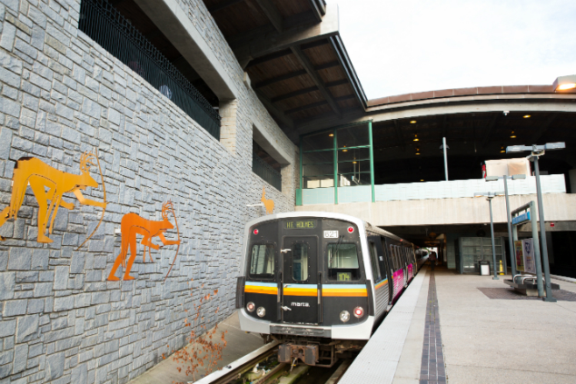
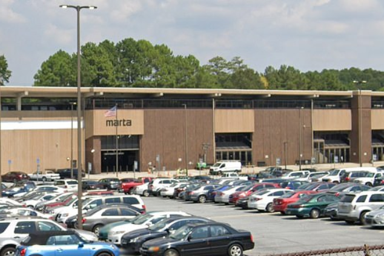
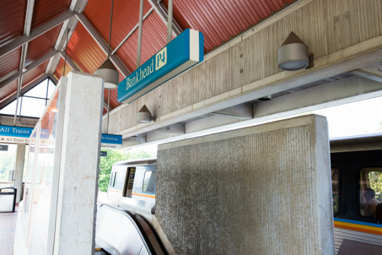
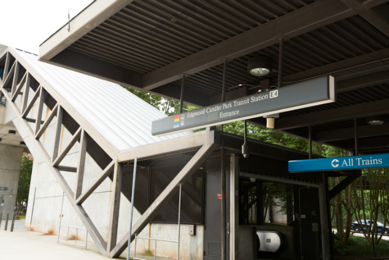
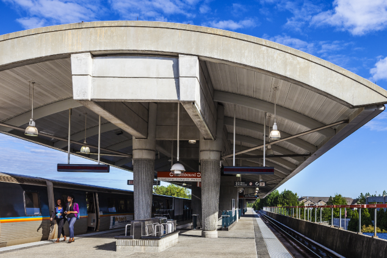
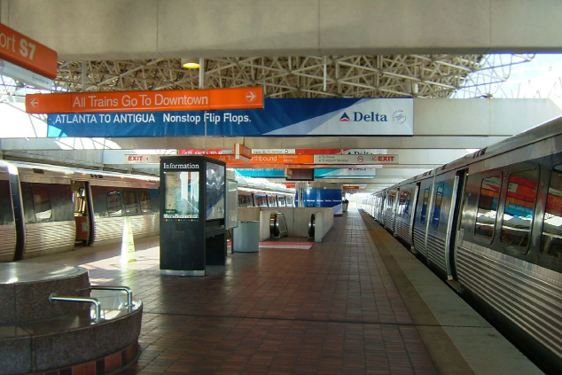

Indian Creek Station

This station is located in DeKalb county, at the end of the Eastbound Blue line.
- Has daily parking
- Has restrooms
H.E. Holmes Station

This station is located in Fulton county, at the end of the Westbound Blue line.
- Has daily parking
- Has restrooms
Bankhead Station

This station is located in Fulton county, at the end of the Westbound Green line.
- NO parking
- Has restrooms
Edgewood/Candler-Park Station

This station is located in DeKalb county, at the end of the Eastbound Green line.
- Has daily parking
- Has restrooms
North Springs Station

This station is located in Fulton county, at the end of the Northbound Red line.
- Has daily and overnight parking
- Has restrooms
Doraville Station
This station is located in DeKalb county, at the end of the Northbound Gold line.
- Has daily and overnight parking
- Has restrooms
Airport Station

This station is located in Clayton county, at the end of the Southbound Red and Gold lines.
- NO parking
- NO restrooms